Data Prep & EDA
Three sources, what was wrong with them, and what they show
Data Collection
Data collection combined one programmatic source with two direct downloads, chosen so that each covered a dimension the others lacked: time depth from the Census survey, economic context from FRED, and geographic detail from Zillow. The FRED series were retrieved through the API described below, which returned 2,771 individual observations across eight series and saved each raw response to disk so that the collection step is auditable and repeatable. The two downloaded sources were taken from their publishers' own distribution pages rather than from any secondary aggregator, so that the files used here are the files those organisations publish.
API source
Source: Federal Reserve Bank of St. Louis, FRED API
Documentation: fred.stlouisfed.org/docs/api/fred
Base endpoint: https://api.stlouisfed.org/fred/series/observations
Example GET request
https://api.stlouisfed.org/fred/series/observations
?series_id=MORTGAGE30US
&observation_start=2000-01-01
&file_type=json
&api_key=YOUR_KEYEight series were retrieved this way, returning 2,771 raw observations. PLACEHOLDER: link to fred_api_fetch.py
Downloaded sources
The Census Housing Vacancy Survey historical tables are published as Excel workbooks on the Census Bureau's website. Table 12 was used, which reports total households and owner-occupied households by age of householder annually from 1982. It was chosen over the Bureau's quarterly tables because those report a single combined figure for householders under 35, while Table 12 separates the age brackets this project depends on. The Zillow Home Value Index is published as a comma-separated file on Zillow's research portal. The metropolitan file for the middle price tier was used, giving a smoothed, seasonally adjusted typical home value for each of 894 metropolitan areas for every month since January 2000.
01Census Housing Vacancy Survey, Table 12
Raw sample
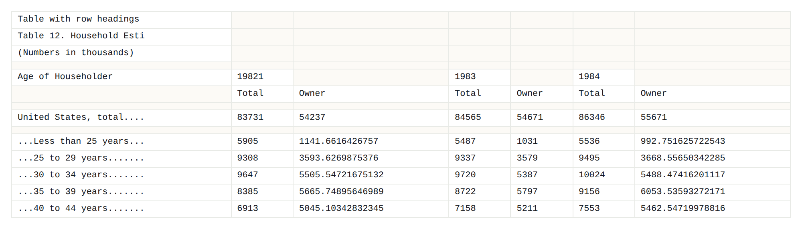
What needs to change
- Locate each repeating
Age of Householderblock and read the paired total and owner columns beneath it. - Strip trailing dot leaders and footnote letters from row labels before they can be matched.
- Resolve years that appear in more than one block, keeping the later revised estimate.
- Convert counts stored as text into numbers.
- Compute the ownership rate, which the file does not contain, as owner households divided by total households.
Cleaned output
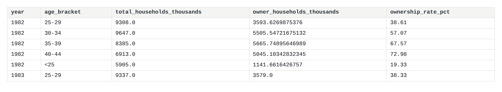
Code used
def parse_histtab12(path=f"{RAW}/histtab12.xlsx"):
import openpyxl
ws = openpyxl.load_workbook(path, data_only=True)["Sheet1"]
rows = list(ws.iter_rows(values_only=True))
targets = {"less than 25 years": "<25", "25 to 29 years": "25-29",
"30 to 34 years": "30-34", "35 to 39 years": "35-39",
"40 to 44 years": "40-44"}
records, i, n = [], 0, len(rows)
while i < n:
if rows[i][0] and str(rows[i][0]).strip() == "Age of Householder":
header = rows[i]
years = [(c, re.sub(r"[a-zA-Z]", "", str(header[c])))
for c in range(1, len(header), 2) if header[c] is not None]
j = i + 3
while j < n and not (rows[j][0] and str(rows[j][0]).strip() == "Age of Householder"):
label = clean_label(rows[j][0]) if rows[j][0] else None
if label:
key = label.lower()
for tlabel, code in targets.items():
if tlabel in key:
for col, y in years:
total = rows[j][col] if col < len(rows[j]) else None
owner = rows[j][col + 1] if col + 1 < len(rows[j]) else None
if total is not None:
records.append((y, code, total, owner))
j += 1
i = j
else:
i += 1
df = pd.DataFrame(records, columns=["year_raw", "age_bracket", "total", "owner"])
df["year"] = pd.to_numeric(df["year_raw"].str.extract(r"(\d{4})")[0], errors="coerce")
df = df.dropna(subset=["year"])
df["year"] = df["year"].astype(int)
# revised vintages repeat a year; the later block supersedes the earlier one
df = df.drop_duplicates(subset=["year", "age_bracket"], keep="last")
df["total"] = pd.to_numeric(df["total"], errors="coerce")
df["owner"] = pd.to_numeric(df["owner"], errors="coerce")
df["ownership_rate_pct"] = (df["owner"] / df["total"] * 100).round(2)
df = df[["year", "age_bracket", "total", "owner", "ownership_rate_pct"]]
df.columns = ["year", "age_bracket", "total_households_thousands",
"owner_households_thousands", "ownership_rate_pct"]
return df.sort_values(["year", "age_bracket"]).reset_index(drop=True)02BLS and Census via the FRED API
Raw sample
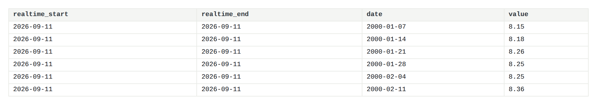
What needs to change
- Collapse eight series arriving weekly, monthly and quarterly onto a single annual grain.
- Drop
realtime_startandrealtime_end, which carry no analytical information. - Treat the string
"."as missing, since reading it as a value turns the whole column into text. - Convert median weekly earnings to an annual figure.
- Deflate nominal dollars to constant 2025 terms using the Consumer Price Index.
Cleaned output
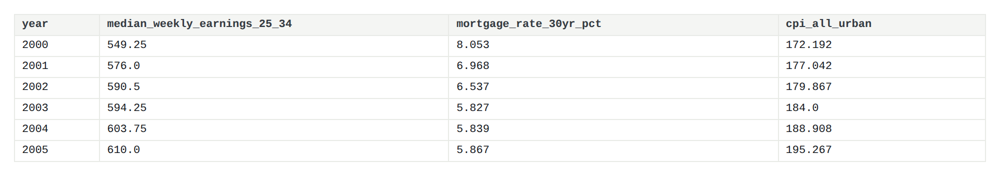
Code used
def fetch_series(series_id, key):
"""Return (metadata_dict, {year: [values]})."""
meta_payload = api_get("series", {"series_id": series_id, "api_key": key, "file_type": "json"})
meta = {}
if meta_payload and meta_payload.get("seriess"):
s = meta_payload["seriess"][0]
meta = {
"series_id": series_id,
"title": s.get("title"),
"units": s.get("units"),
"frequency": s.get("frequency"),
"seasonal_adjustment": s.get("seasonal_adjustment"),
"last_updated": s.get("last_updated"),
}
obs = api_get("series/observations", {
"series_id": series_id, "api_key": key, "file_type": "json",
"observation_start": START,
})
if not obs:
return meta, {}
os.makedirs(RAW_DIR, exist_ok=True)
with open("{}/{}.json".format(RAW_DIR, series_id), "w") as f:
json.dump(obs, f)
by_year = defaultdict(list)
for o in obs.get("observations", []):
if o["value"] in (".", "", None):
continue # FRED marks missing readings with "."
by_year[int(o["date"][:4])].append(float(o["value"]))
return meta, by_year03Zillow Home Value Index, metro
Raw sample
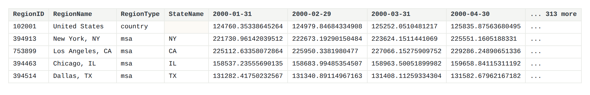
What needs to change
- Reshape 319 month columns into rows, so each observation occupies one row.
- Reduce each metro-year to a single value, taking the latest month reported in that year.
- Fill the empty
StateNameon the national row, which a default groupby silently discards. - Separate the country row from the 894 metropolitan rows, since they feed different tables.
Cleaned output
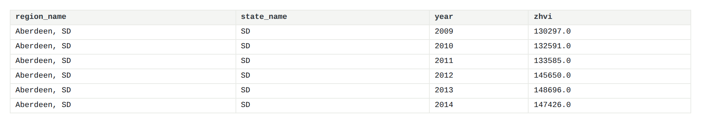
Code used
def parse_zhvi(path=f"{RAW}/Metro_zhvi_uc_sfrcondo_tier_0.33_0.67_sm_sa_month.csv"):
wide = pd.read_csv(path)
id_cols = ["RegionID", "SizeRank", "RegionName", "RegionType", "StateName"]
date_cols = [c for c in wide.columns if c not in id_cols]
long = wide.melt(id_vars=id_cols, value_vars=date_cols,
var_name="month", value_name="zhvi").dropna(subset=["zhvi"])
long["year"] = long["month"].str.slice(0, 4).astype(int)
long["month_num"] = long["month"].str.slice(5, 7).astype(int)
# one value per metro-year: the latest month reported that year
long = long.sort_values(["RegionID", "year", "month_num"])
# StateName is empty for the national row; without dropna=False groupby
# silently discards it and the whole national series disappears.
long["StateName"] = long["StateName"].fillna("")
annual = long.groupby(["RegionID", "RegionName", "RegionType", "StateName", "year"],
as_index=False, dropna=False).last()
annual = annual[["RegionID", "RegionName", "RegionType", "StateName",
"year", "zhvi", "month_num"]]
annual.columns = ["region_id", "region_name", "region_type", "state_name",
"year", "zhvi", "as_of_month"]
annual["zhvi"] = annual["zhvi"].round(0)
return annual.sort_values(["region_name", "year"]).reset_index(drop=True)Merging the Sources
Each source answers a different part of the question and none answers it alone. The Census survey records whether young households own but says nothing about what a home costs or what they earn. FRED records earnings and borrowing costs but only nationally. Zillow records prices across 894 metropolitan areas but nothing about who buys. Affordability is a relationship between all three, so the measures this project depends on, price against income and payment against income, exist only after the join.
Both merges use year as the key, because that is the finest grain the three sources share:
the Census and FRED series are national, so nothing narrower is available to join on.
Merge 1: national_annual
An inner join on year across the ownership table, the FRED annual table, and the national row of the Zillow data. Inner rather than outer, because a year missing any of the three cannot support the derived measures. The result spans 2000 to 2025 and is 26 rows rather than 44, since ownership data begins in 1982 but prices and earnings begin in 2000, and 2026 ownership is not yet published. Five derived columns are added after the join: price-to-income, years to a down payment, monthly mortgage payment, payment as a share of income, and earnings in real terms.
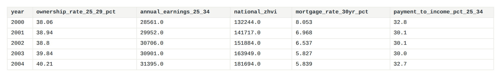
Merge 2: metro_year_panel
A left join on year, attaching each national row to every metropolitan area in that year. This is one-to-many by design, and it has a consequence worth stating plainly: earnings and the mortgage rate are identical across all 894 metros within a year and vary only down the time axis. They are national controls rather than local measurements, and no model should treat them as distinguishing one city from another. The result is 19,288 rows, 894 metros across 2000 to 2025.
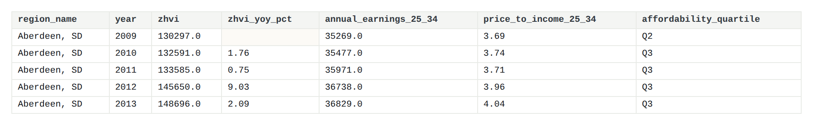
Code used
# ---- national annual table -------------------------------------------------
if os.path.exists(f"{RAW}/fred/fred_annual.csv"):
fred = pd.read_csv(f"{RAW}/fred/fred_annual.csv")
log("\nfred_annual.csv found - using API-sourced earnings and rates")
else:
e1 = pd.read_csv(f"{RAW}/LEU0252887100Q.csv")
e2 = pd.read_csv(f"{RAW}/LEU0252888500Q.csv")
for d, col in ((e1, "median_weekly_earnings_20_24"), (e2, "median_weekly_earnings_25_34")):
d.columns = ["observation_date", col]
d["year"] = d["observation_date"].str.slice(0, 4).astype(int)
fred = (e1.groupby("year")["median_weekly_earnings_20_24"].mean().round(2).reset_index()
.merge(e2.groupby("year")["median_weekly_earnings_25_34"].mean().round(2).reset_index(),
on="year"))
fred["annual_earnings_20_24"] = (fred["median_weekly_earnings_20_24"] * 52).round(0)
fred["annual_earnings_25_34"] = (fred["median_weekly_earnings_25_34"] * 52).round(0)
log("\nfred_annual.csv NOT found - falling back to the downloaded CSVs.")
log(" Run fred_api_fetch.py to satisfy the API requirement and add mortgage rates.")
own_wide = own_annual.pivot(index="year", columns="age_bracket",
values="ownership_rate_pct").reset_index()
own_wide.columns = ["year"] + [f"ownership_rate_{c.replace('<', 'lt').replace('-', '_')}_pct"
for c in own_wide.columns[1:]]
national_zhvi = (zhvi[zhvi.region_type == "country"][["year", "zhvi"]]
.rename(columns={"zhvi": "national_zhvi"}))
national = own_wide.merge(fred, on="year").merge(national_zhvi, on="year")
national["price_to_income_25_34"] = (national["national_zhvi"] /
national["annual_earnings_25_34"]).round(2)
national["years_to_down_payment_25_34"] = (
(DOWN_PAYMENT * national["national_zhvi"]) /
(national["annual_earnings_25_34"] * SAVINGS_RATE)).round(1)
if "mortgage_rate_30yr_pct" in national.columns:
national["monthly_payment_usd"] = national.apply(
lambda r: monthly_payment(r["national_zhvi"], r["mortgage_rate_30yr_pct"]), axis=1).round(0)
national["payment_to_income_pct_25_34"] = (
national["monthly_payment_usd"] * 12 / national["annual_earnings_25_34"] * 100).round(1)
national.to_csv(f"{OUT}/national_annual.csv", index=False)
log(f"national_annual.csv {len(national):>6,} rows "
f"{national.year.min()}-{national.year.max()} {national.shape[1]} columns")
# ---- metro-year panel with engineered features -----------------------------
panel = zhvi[zhvi.region_type == "msa"].copy()
panel = panel[panel.year.between(2000, 2025)].sort_values(["region_id", "year"])
g = panel.groupby("region_id")["zhvi"]
panel["zhvi_yoy_pct"] = (g.pct_change(1) * 100).round(2)
panel["zhvi_3yr_pct"] = (g.pct_change(3) * 100).round(2)
panel["zhvi_5yr_pct"] = (g.pct_change(5) * 100).round(2)
panel["zhvi_volatility_5yr"] = (panel.groupby("region_id")["zhvi_yoy_pct"]
.transform(lambda s: s.rolling(5, min_periods=3).std()).round(2))
carry = ["year", "national_zhvi", "annual_earnings_25_34", "annual_earnings_20_24",
"ownership_rate_25_29_pct", "ownership_rate_30_34_pct"]
for optional in ["mortgage_rate_30yr_pct", "annual_earnings_25_34_real2025"]:
if optional in national.columns:
carry.append(optional)
panel = panel.merge(national[carry], on="year", how="left")
panel["zhvi_vs_national"] = (panel["zhvi"] / panel["national_zhvi"]).round(3)
panel["zhvi_pctile_in_year"] = (panel.groupby("year")["zhvi"]
.rank(pct=True).mul(100).round(1))
panel["price_to_income_25_34"] = (panel["zhvi"] / panel["annual_earnings_25_34"]).round(2)
panel["years_to_down_payment_25_34"] = (
(DOWN_PAYMENT * panel["zhvi"]) /
(panel["annual_earnings_25_34"] * SAVINGS_RATE)).round(1)
if "mortgage_rate_30yr_pct" in panel.columns:
panel["monthly_payment_usd"] = (
panel["zhvi"] * (1 - DOWN_PAYMENT)
* (panel["mortgage_rate_30yr_pct"] / 1200)
* (1 + panel["mortgage_rate_30yr_pct"] / 1200) ** 360
/ ((1 + panel["mortgage_rate_30yr_pct"] / 1200) ** 360 - 1)).round(0)
panel["payment_to_income_pct_25_34"] = (
panel["monthly_payment_usd"] * 12 / panel["annual_earnings_25_34"] * 100).round(1)
panel["affordability_quartile"] = (panel.groupby("year")["price_to_income_25_34"]
.transform(lambda s: pd.qcut(s, 4, duplicates="drop",
labels=False) + 1
if s.notna().sum() >= 4 else pd.Series(index=s.index, dtype="float")))
panel["affordability_quartile"] = panel["affordability_quartile"].map(
{1: "Q1_most_affordable", 2: "Q2", 3: "Q3", 4: "Q4_least_affordable"})
panel.to_csv(f"{OUT}/metro_year_panel.csv", index=False)
log(f"metro_year_panel.csv {len(panel):>6,} rows "
f"{panel.region_id.nunique()} metros {panel.shape[1]} columns")
if os.path.exists(f"{RAW}/acs/acs_metro_annual.csv"):
log("\nacs_metro_annual.csv found - join it for metro-level ownership rates.")
else:
log("\nacs_metro_annual.csv NOT found - metro-level ownership rate unavailable.")
log(" Run acs_api_fetch.py if the target for Part 2 should be a real ownership rate.")Assumptions
Every modelling choice below is a decision, not a measurement. Introduce them in your own words.
- Annual earnings are estimated as median weekly earnings × 52.
- Years-to-down-payment assumes 15% of gross income saved each year.
- Monthly payment figures assume a 30-year fixed loan at 80% loan-to-value.
- Each year's home value is the latest month Zillow reported that year, so 2026 is partial.
- Earnings are national, so metro affordability compares local prices against a national income.
Links to Raw Data & Code
- PLACEHOLDER : histtab12.xlsx, raw HVS workbook
- PLACEHOLDER : Metro ZHVI, raw Zillow CSV
- PLACEHOLDER : raw FRED API responses, 8 JSON files
- PLACEHOLDER : fred_api_fetch.py, API collection script
- PLACEHOLDER : build_datasets.py, cleaning pipeline
- PLACEHOLDER : make_eda_figures.py, figure generation
- PLACEHOLDER : cleaned tables, data_clean/
Summary Statistics
Descriptive statistics for the national table, 26 annual observations covering 2000 to 2025. Skewness is the column worth reading: the ownership and rate measures are close to symmetric, while price and earnings are mildly right-skewed by their upward trend rather than by outliers.
| Column | Mean | Median | Variance | Std dev | Skewness | Count |
|---|---|---|---|---|---|---|
ownership_rate_lt25_pct | 23.34 | 22.93 | 1.66 | 1.29 | 0.54 | 26 |
ownership_rate_25_29_pct | 36.03 | 35.24 | 10.79 | 3.28 | 0.25 | 26 |
ownership_rate_30_34_pct | 50.70 | 49.23 | 15.24 | 3.90 | 0.37 | 26 |
annual_earnings_25_34 | 39,340 | 36,784 | 75,881,392 | 8,711.0 | 0.98 | 26 |
annual_earnings_25_34_real2025 | 53,963 | 53,162 | 6,560,728 | 2,561.4 | 0.83 | 26 |
national_zhvi | 223,512 | 202,524 | 5,343,570,842 | 73,100 | 1.01 | 26 |
mortgage_rate_30yr_pct | 5.21 | 5.19 | 1.90 | 1.38 | 0.12 | 26 |
price_to_income_25_34 | 5.59 | 5.55 | 0.53 | 0.73 | 0.15 | 26 |
payment_to_income_pct_25_34 | 29.71 | 29.00 | 41.01 | 6.40 | 0.41 | 26 |
housing_starts_thousands | 1,307.7 | 1,348.8 | 174,704 | 418.0 | -0.17 | 26 |
The full table for all 22 numeric columns is written to
data_clean/summary_statistics.csv by the pipeline.
Exploratory Data Analysis
Exploration of the cleaned tables shows a pattern more complicated than steady decline. Homeownership among young householders rises to a peak in the mid-2000s, collapses through the following decade, and recovers only partially, leaving both the 25-to-29 and 30-to-34 brackets well below where they stood before 2008. Affordability, measured as the share of income required to service a mortgage on a typical home, does not decline steadily either: it is worst in 2023 at 41.5 percent, better than at any point in the series in 2012 at 20.0 percent, and roughly equal in 2000 and 2019. The figures below examine each component in turn, ownership by age, earnings in nominal and real terms, prices, interest rates, and the geographic distribution across metropolitan areas, before the modelling sections take up the questions that require more than description.
One result in the exploration runs against expectation and is worth stating plainly. Homeownership among householders under 25 rose over the period, from 21.7 percent in 2000 to 24.2 percent in 2025, while every older young-adult bracket fell. The most likely explanation is compositional rather than economic: if fewer people under 25 form independent households at all, those who do are drawn disproportionately from those able to buy. The data assembled here can establish that the divergence exists but cannot confirm the mechanism, and the finding is treated accordingly.
Ten figures. Each carries a title, axis labels and two sentences beneath: what it shows, then what it means. Thumbnails link through to the full-size image.
{kind=link}
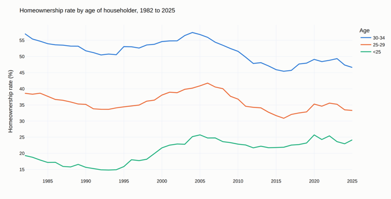
{kind=link}
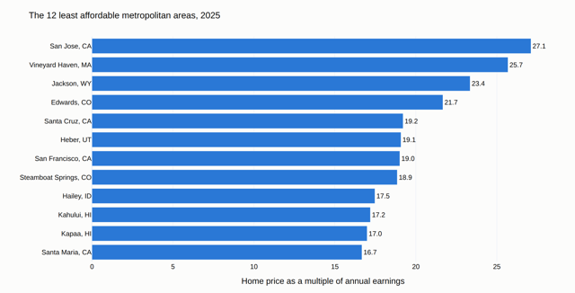
{kind=link}
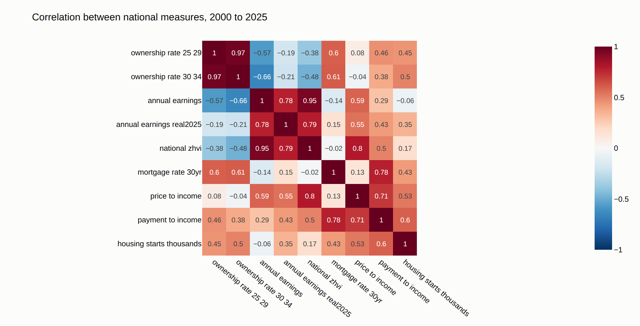
{kind=link}
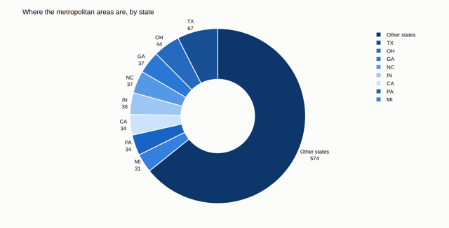
{kind=link}
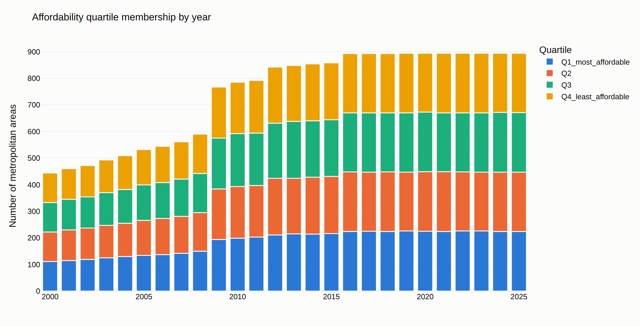
{kind=link}
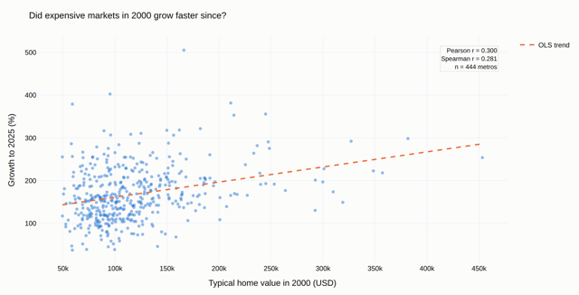
{kind=link}
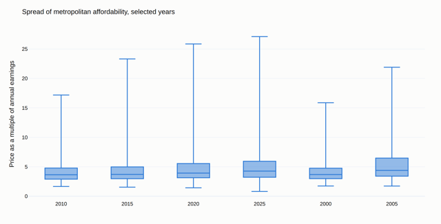
{kind=link}
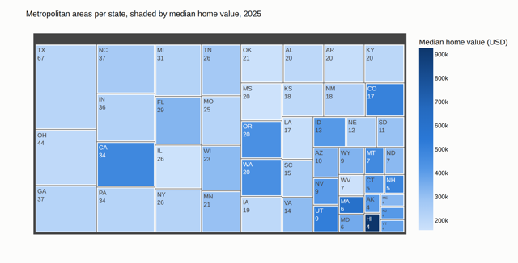
{kind=link}
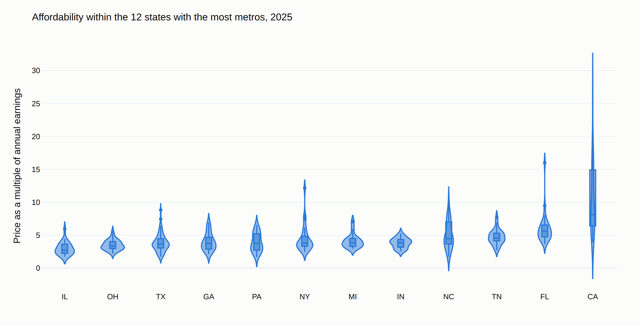
{kind=link}
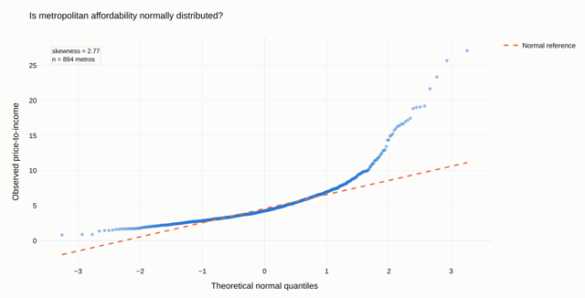
Code used
Every figure above is produced by a single script that reads the cleaned tables and writes both a full-size image and a thumbnail. Re-running it regenerates all ten, so the figures cannot drift from the data behind them.
# EDA figures for the Gen Z Homeownership project
# Regenerates every figure in docs/images/ from the cleaned tables in data_clean/
# Run: python3 make_eda_figures.py
import os
import math
import pandas as pd
import numpy as np
import plotly.express as px
import plotly.graph_objects as go
out_dir = "docs/images"
os.makedirs(out_dir, exist_ok=True)
# Categorical colours, validated for colour-vision deficiency
palette = ["#2a78d6", "#eb6834", "#1baf7a", "#eda100"]
blues = ["#cde2fb", "#9ec5f4", "#5598e7", "#2a78d6", "#256abf", "#184f95", "#0d366b"]
surface = "#fcfcfb"
# Load cleaned datasets locally
national = pd.read_csv("data_clean/national_annual.csv")
ownership = pd.read_csv("data_clean/ownership_by_age_annual.csv")
panel = pd.read_csv("data_clean/metro_year_panel.csv")
# Latest year of the metro panel, used by several figures
latest = panel[panel["year"] == 2025].dropna(subset=["price_to_income_25_34"]).copy()
def save(fig, n, title):
fig.update_layout(
template="plotly_white",
title=dict(text=title, font=dict(size=17)),
paper_bgcolor=surface,
plot_bgcolor=surface,
font=dict(family="Helvetica, Arial, sans-serif", size=13, color="#0b0b0b"),
margin=dict(l=70, r=40, t=70, b=60),
width=1100,
height=560,
)
# Static export needs a local Chrome for kaleido. Where that is unavailable the
# figure is written as HTML instead and exported to PNG separately.
try:
fig.write_image(f"{out_dir}/eda-{n:02d}-large.png", scale=2)
fig.write_image(f"{out_dir}/eda-{n:02d}.png", scale=0.62)
except Exception:
os.makedirs("_figures_html", exist_ok=True)
fig.write_html(f"_figures_html/eda-{n:02d}.html", include_plotlyjs="directory")
print(f" eda-{n:02d} {title}")
# Figure 1. Homeownership rate by age of householder
age_trend = ownership[ownership["age_bracket"].isin(["<25", "25-29", "30-34"])]
fig1 = px.line(
age_trend,
x="year",
y="ownership_rate_pct",
color="age_bracket",
category_orders={"age_bracket": ["30-34", "25-29", "<25"]},
color_discrete_sequence=palette,
labels={"year": "", "ownership_rate_pct": "Homeownership rate (%)", "age_bracket": "Age"},
title="Homeownership rate by age of householder, 1982 to 2025",
)
fig1.update_traces(line=dict(width=2.5))
save(fig1, 1, "Homeownership rate by age of householder, 1982 to 2025")
# Figure 2. Least affordable metropolitan areas
top_n = 12
least_affordable = (
latest.nlargest(top_n, "price_to_income_25_34")
.sort_values("price_to_income_25_34")
.reset_index(drop=True)
)
fig2 = px.bar(
least_affordable,
x="price_to_income_25_34",
y="region_name",
orientation="h",
text="price_to_income_25_34",
color_discrete_sequence=[palette[0]],
labels={"price_to_income_25_34": "Home price as a multiple of annual earnings", "region_name": ""},
title=f"The {top_n} least affordable metropolitan areas, 2025",
)
fig2.update_traces(texttemplate="%{text:.1f}", textposition="outside", cliponaxis=False)
save(fig2, 2, f"The {top_n} least affordable metropolitan areas, 2025")
# Figure 3. Correlation between national measures
measures = [
"ownership_rate_25_29_pct", "ownership_rate_30_34_pct",
"annual_earnings_25_34", "annual_earnings_25_34_real2025",
"national_zhvi", "mortgage_rate_30yr_pct",
"price_to_income_25_34", "payment_to_income_pct_25_34",
"housing_starts_thousands",
]
measures = [c for c in measures if c in national.columns]
corr = national[measures].corr().round(2)
short = [c.replace("_pct", "").replace("_25_34", "").replace("_", " ").strip() for c in measures]
corr.index, corr.columns = short, short
fig3 = px.imshow(
corr,
text_auto=True,
zmin=-1,
zmax=1,
color_continuous_scale="RdBu_r",
title="Correlation between national measures, 2000 to 2025",
)
fig3.update_xaxes(tickangle=40)
save(fig3, 3, "Correlation between national measures, 2000 to 2025")
# Figure 4. Where the metropolitan areas are
state_counts = latest["state_name"].value_counts()
top_states = state_counts.head(8)
share = pd.DataFrame({
"state": list(top_states.index) + ["Other states"],
"metros": list(top_states.values) + [int(state_counts[8:].sum())],
})
fig4 = px.pie(
share,
names="state",
values="metros",
hole=0.42,
color_discrete_sequence=blues[::-1],
title=f"Where the {len(latest)} metropolitan areas are, by state",
)
fig4.update_traces(textinfo="label+value", textposition="outside",
marker=dict(line=dict(color=surface, width=2)))
save(fig4, 4, "Where the metropolitan areas are, by state")
# Figure 5. Affordability quartile membership by year
quartiles = (
panel.dropna(subset=["affordability_quartile"])
.groupby(["year", "affordability_quartile"])
.size()
.reset_index(name="metros")
)
fig5 = px.bar(
quartiles,
x="year",
y="metros",
color="affordability_quartile",
category_orders={"affordability_quartile":
["Q1_most_affordable", "Q2", "Q3", "Q4_least_affordable"]},
color_discrete_sequence=palette,
labels={"year": "", "metros": "Number of metropolitan areas", "affordability_quartile": "Quartile"},
title="Affordability quartile membership by year",
)
fig5.update_traces(marker_line=dict(color=surface, width=1.5))
save(fig5, 5, "Affordability quartile membership by year")
# Figure 6. Starting price against subsequent growth
wide = (
panel[panel["year"].isin([2000, 2025])]
.pivot_table(index="region_name", columns="year", values="zhvi")
.dropna()
.reset_index()
)
wide["growth_pct"] = (wide[2025] / wide[2000] - 1) * 100
slope, intercept = np.polyfit(wide[2000], wide["growth_pct"], 1)
line_x = np.linspace(wide[2000].min(), wide[2000].max(), 100)
pearson = wide[2000].corr(wide["growth_pct"])
# Spearman is Pearson on the ranks, computed directly so scipy is not needed
spearman = wide[2000].rank().corr(wide["growth_pct"].rank())
fig6 = px.scatter(
wide,
x=2000,
y="growth_pct",
hover_name="region_name",
opacity=0.5,
color_discrete_sequence=[palette[0]],
labels={"2000": "Typical home value in 2000 (USD)", "growth_pct": "Growth to 2025 (%)"},
title="Did expensive markets in 2000 grow faster since?",
)
fig6.add_trace(go.Scatter(
x=line_x,
y=slope * line_x + intercept,
mode="lines",
line=dict(color=palette[1], width=2.5, dash="dash"),
name="OLS trend",
))
fig6.add_annotation(
x=0.98, y=0.96, xref="paper", yref="paper", showarrow=False, align="right",
text=f"Pearson r = {pearson:.3f}<br>Spearman r = {spearman:.3f}<br>n = {len(wide)} metros",
bgcolor=surface, bordercolor="#e1e0d9", borderwidth=1, font=dict(size=12),
)
save(fig6, 6, "Did expensive markets in 2000 grow faster since?")
# Figure 7. Spread of metropolitan affordability
selected_years = [2000, 2005, 2010, 2015, 2020, 2025]
spread = panel[panel["year"].isin(selected_years)].dropna(subset=["price_to_income_25_34"])
fig7 = px.box(
spread,
x="year",
y="price_to_income_25_34",
points=False,
color_discrete_sequence=[palette[0]],
labels={"year": "", "price_to_income_25_34": "Price as a multiple of annual earnings"},
title="Spread of metropolitan affordability, selected years",
)
fig7.update_xaxes(type="category")
save(fig7, 7, "Spread of metropolitan affordability, selected years")
# Figure 8. Metropolitan areas per state
state_summary = (
latest.groupby("state_name")
.agg(metros=("region_name", "count"), median_value=("zhvi", "median"))
.reset_index()
)
state_summary = state_summary[state_summary["metros"] >= 4]
fig8 = px.treemap(
state_summary,
path=["state_name"],
values="metros",
color="median_value",
color_continuous_scale=blues,
labels={"median_value": "Median home value (USD)"},
title="Metropolitan areas per state, shaded by median home value, 2025",
)
fig8.update_traces(marker=dict(line=dict(color=surface, width=2)),
root_color=surface,
texttemplate="%{label}<br>%{value}")
save(fig8, 8, "Metropolitan areas per state, shaded by median home value, 2025")
# Figure 9. Affordability within the states with the most metros
busiest = latest["state_name"].value_counts().head(12).index
by_state = latest[latest["state_name"].isin(busiest)]
order = by_state.groupby("state_name")["price_to_income_25_34"].median().sort_values().index.tolist()
fig9 = px.violin(
by_state,
x="state_name",
y="price_to_income_25_34",
box=True,
category_orders={"state_name": order},
color_discrete_sequence=[palette[0]],
labels={"state_name": "", "price_to_income_25_34": "Price as a multiple of annual earnings"},
title="Affordability within the 12 states with the most metros, 2025",
)
save(fig9, 9, "Affordability within the 12 states with the most metros, 2025")
# Figure 10. Normal Q-Q plot
# scipy is not a dependency here, so the inverse normal CDF is Acklam's approximation
def norm_ppf(p):
a = [-3.969683028665376e+01, 2.209460984245205e+02, -2.759285104469687e+02,
1.383577518672690e+02, -3.066479806614716e+01, 2.506628277459239e+00]
b = [-5.447609879822406e+01, 1.615858368580409e+02, -1.556989798598866e+02,
6.680131188771972e+01, -1.328068155288572e+01]
c = [-7.784894002430293e-03, -3.223964580411365e-01, -2.400758277161838e+00,
-2.549732539343734e+00, 4.374664141464968e+00, 2.938163982698783e+00]
d = [7.784695709041462e-03, 3.224671290700398e-01, 2.445134137142996e+00, 3.754408661907416e+00]
if p < 0.02425:
q = math.sqrt(-2 * math.log(p))
return (((((c[0]*q+c[1])*q+c[2])*q+c[3])*q+c[4])*q+c[5]) / ((((d[0]*q+d[1])*q+d[2])*q+d[3])*q+1)
if p > 1 - 0.02425:
q = math.sqrt(-2 * math.log(1 - p))
return -(((((c[0]*q+c[1])*q+c[2])*q+c[3])*q+c[4])*q+c[5]) / ((((d[0]*q+d[1])*q+d[2])*q+d[3])*q+1)
q = p - 0.5
r = q * q
return (((((a[0]*r+a[1])*r+a[2])*r+a[3])*r+a[4])*r+a[5])*q / (((((b[0]*r+b[1])*r+b[2])*r+b[3])*r+b[4])*r+1)
observed = np.sort(latest["price_to_income_25_34"].values)
n_obs = len(observed)
theoretical = np.array([norm_ppf((i + 0.5) / n_obs) for i in range(n_obs)])
q1, q3 = np.percentile(observed, [25, 75])
qq_slope = (q3 - q1) / (norm_ppf(0.75) - norm_ppf(0.25))
qq_intercept = q1 - qq_slope * norm_ppf(0.25)
skewness = ((observed - observed.mean()) ** 3).mean() / observed.std() ** 3
fig10 = px.scatter(
x=theoretical,
y=observed,
opacity=0.5,
color_discrete_sequence=[palette[0]],
labels={"x": "Theoretical normal quantiles", "y": "Observed price-to-income"},
title="Is metropolitan affordability normally distributed?",
)
fig10.add_trace(go.Scatter(
x=theoretical,
y=qq_slope * theoretical + qq_intercept,
mode="lines",
line=dict(color=palette[1], width=2.5, dash="dash"),
name="Normal reference",
))
fig10.add_annotation(
x=0.03, y=0.96, xref="paper", yref="paper", showarrow=False, align="left",
text=f"skewness = {skewness:.2f}<br>n = {n_obs} metros",
bgcolor=surface, bordercolor="#e1e0d9", borderwidth=1, font=dict(size=12),
)
save(fig10, 10, "Is metropolitan affordability normally distributed?")
# Summary statistics for the Data Prep tab
numeric = national.select_dtypes(include=[np.number]).drop(columns=["year"], errors="ignore")
summary = pd.DataFrame({
"mean": numeric.mean(),
"median": numeric.median(),
"variance": numeric.var(),
"std_dev": numeric.std(),
"skewness": numeric.skew(),
"count": numeric.count(),
}).round(3)
summary.index.name = "column"
summary.to_csv("data_clean/summary_statistics.csv")
print(f" summary_statistics.csv {len(summary)} columns")Inspection & Reflection
Missingness, duplicates, coverage gaps, and any bias the cleaning introduced. Be explicit about what a reader should not over-interpret.